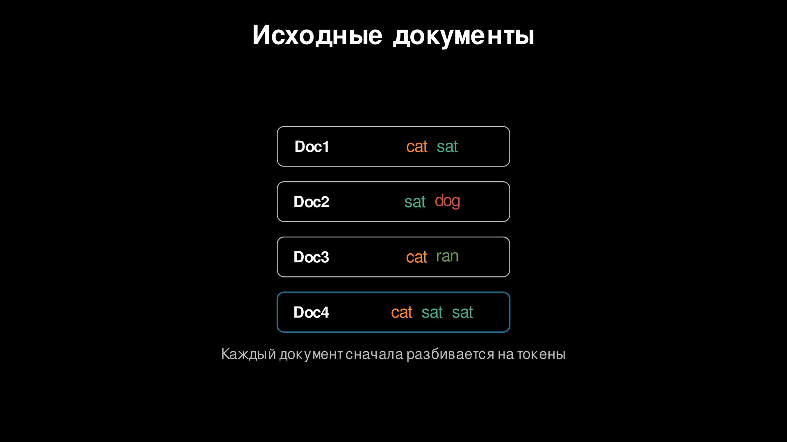
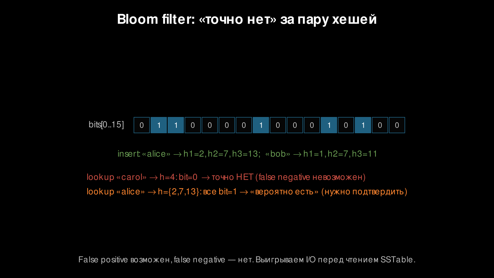
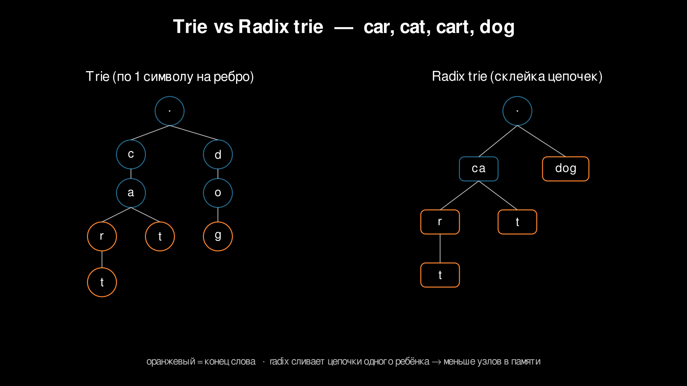
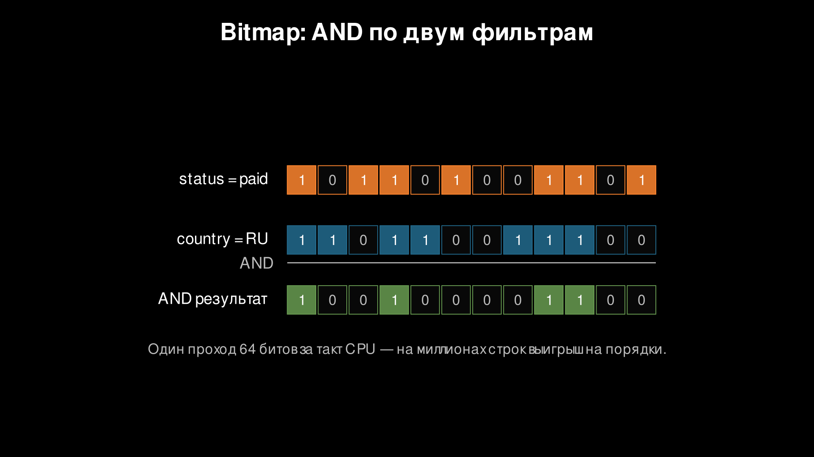
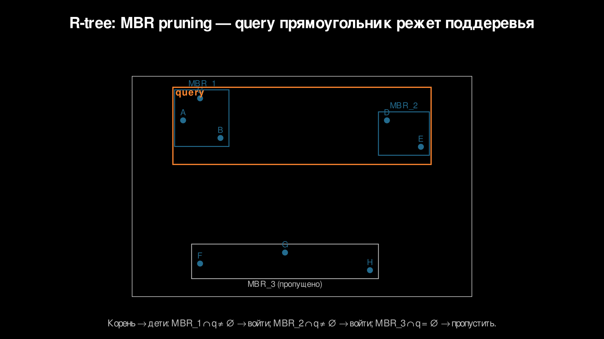
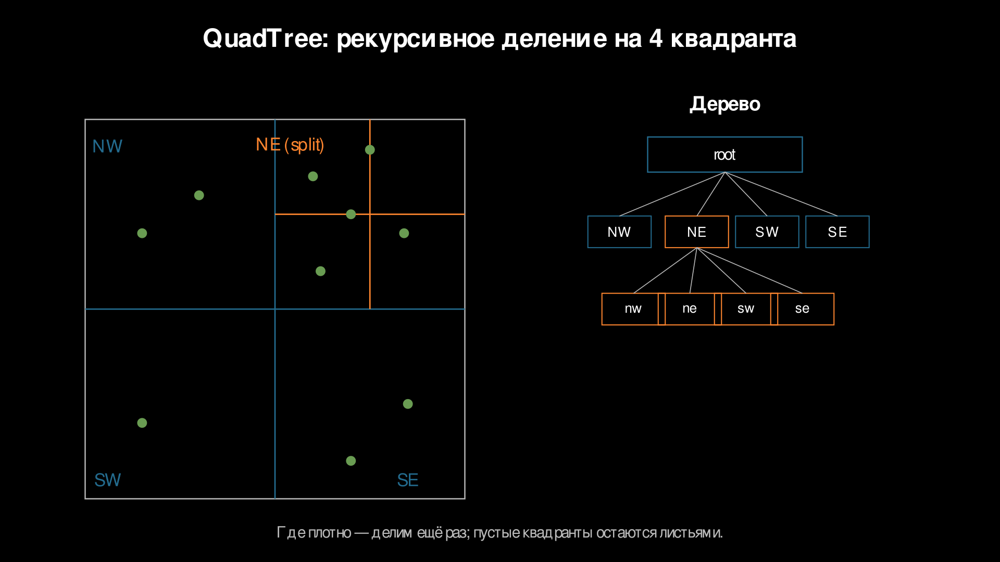
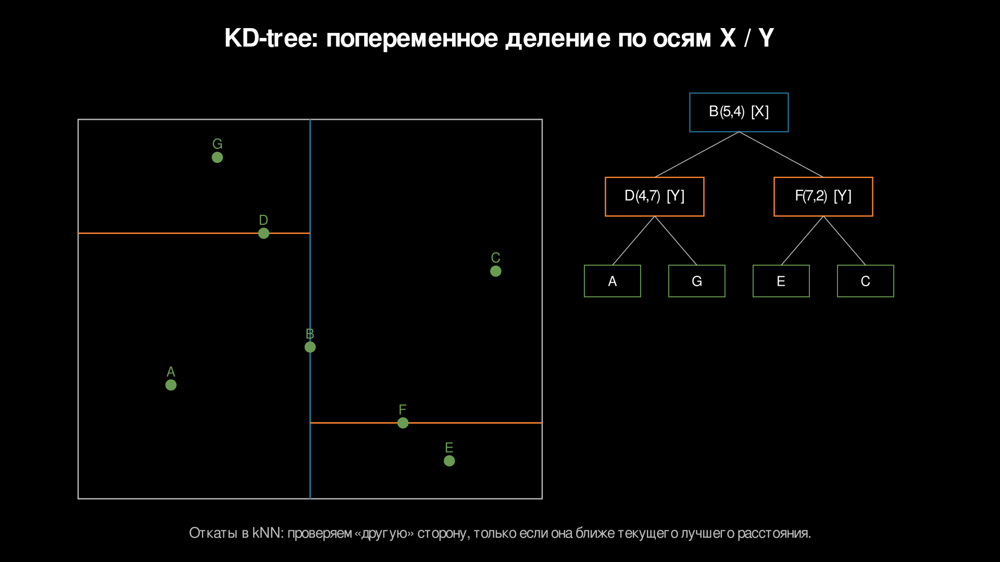

Неклассические индексы: текст, bitmap, prefix и гео
Неклассические индексы: текст, bitmap, prefix и гео
B-tree и hash хорошо работают, когда запрос похож на точное равенство, диапазон или сортировку по одному ключу. В информационных системах часто встречаются другие формы запроса:
where text contains words
where status in (...) and country in (...)
where name starts with 'iph'
where point inside area
where nearest objects to pointДля них нужен другой способ сократить кандидатов и не читать все строки, документы или объекты. Лекция собирает каталог структур, которые строятся заранее под конкретную форму запроса.
Полный перебор как базовая цена
Полный перебор — базовая цена запроса без подходящего индекса. Если в таблице или коллекции N объектов, система проверяет каждый:
for object in all_objects:
if matches(query, object):
emit(object)Схема универсальна и всегда корректна, потому что каждый объект проверяется напрямую. Но работа растёт линейно от размера данных: O(N) проверок, O(N) чтений или оба фактора сразу.
Индекс меняет форму работы:
candidates = index.lookup(query)
for object in candidates:
if exact_check(query, object):
emit_or_rank(object)Кандидаты и финальный ответ — разные вещи. Индекс обычно говорит: эти объекты стоит проверить. После него может потребоваться точная проверка, вычисление расстояния, проверка позиций слов, фильтрация удалённых записей или ранжирование.
Цена индекса появляется заранее:
- хранение дополнительной структуры, поэтому растёт расход памяти или диска;
- обновление индекса при записи, поэтому вставка и удаление становятся дороже;
- иногда индекс возвращает лишних кандидатов, поэтому остаётся этап точной проверки;
- иногда индекс вероятностный, и тогда мы платим точностью ответа на промежуточном шаге.
Почему B-tree/hash не всегда помогают
B-tree упорядочивает ключи в одномерном порядке. Hash распределяет ключи по значениям hash-функции.
| Индекс | Хорошо работает для | Плохо работает для |
|---|---|---|
| B-tree | точное равенство, диапазон, сортировка | поиск по словам, по смыслу, по области в 2D |
| Hash | точное равенство | диапазон, префикс, сортировка |
| Bitmap | фильтры по полям с небольшим набором значений | частые одиночные обновления, уникальные значения |
Если запрос where id = 42, hash или B-tree быстро находят одну запись, потому что ключ известен целиком. Если запрос where created_at between ..., B-tree быстро проходит диапазон, потому что ключи отсортированы.
А запрос where text contains 'refund' уже не диапазон по тексту. Слово может оказаться в начале, середине или конце строки, и обычный B-tree по колонке text помогает только для порядка целых строк, а не для поиска токена внутри них.
Запрос where name starts with 'iph' ближе к диапазону, но только при подходящей нормализации и порядке строк. Для автодополнения обычно нужно быстро пройти дерево префикса и вернуть много продолжений, поэтому trie или radix trie дают более прямую модель доступа.
Запрос where point inside area двумерен. B-tree по x отберёт диапазон по одной оси, а потом всё равно придётся проверять почти все точки по y. B-tree по (x, y) тоже задаёт лексикографический порядок, а не геометрическую близость.
Когда форма запроса другая, меняется и структура доступа. Дальше идут индексы, которые сокращают область поиска по токенам, битовым векторам, префиксам и пространственным областям.
Инвертированный индекс
Инвертированный индекс нужен для запросов вида «найти документы, где встречаются заданные слова», для фразовых запросов и ранжирования документов по словам. Обычная таблица хранит связь документ -> текст. Инвертированный индекс разворачивает её в связь термин -> список документов.
Такое разворачивание убирает полный просмотр текстов. Поиск слова больше не читает все документы, а сразу открывает список тех, где термин встретился.

В промышленном индексе список документов хранит не только docID. Минимальная запись выглядит так:
термин -> [(id документа, частота, позиции)]id документа нужен, чтобы найти исходный текст. Частота показывает, сколько раз термин встретился в документе. Позиции нужны для фразовых запросов и подсветки фрагментов.
Первый этап построения — токенизация. Текст разбивается на токены: слова, числа, иногда части слов или n-граммы.
"Вернуть беспроводные наушники"
-> ["вернуть", "беспроводные", "наушники"]Затем применяются нормализация и фильтры:
- приведение к нижнему регистру, потому что
Ноутбукиноутбукобычно должны совпадать; - удаление стоп-слов:
и,в,наслишком частотны и плохо помогают отбору; - нормализация словоформ, потому что
наушник,наушникиинаушникамидолжны находиться по одному запросу; - настройка под язык, потому что правила нормализации зависят от языка.
После токенизации документ превращается в набор терминов с позициями. Для карточки товара это могут быть леммы из названия, описания, бренда и характеристик. Позиции позволяют потом отличить фразу беспроводные наушники от двух слов, которые случайно встретились в разных частях описания.
Добавление документа обновляет только списки тех терминов, которые встретились в этом документе. Получается дешевле полной перестройки индекса, потому что число терминов одного документа обычно намного меньше размера корпуса.
Удаление часто делается логически. Документ помечается как удалённый, а старые записи в списках убираются позже при слиянии сегментов. Так делают, чтобы не переписывать большие блоки на диске ради одной строки.
Запрос ноутбук AND игровой превращается в пересечение списков. Если они отсортированы по id документа, пройти их можно двумя указателями:
ноутбук -> [1, 4, 5, 9]
игровой -> [2, 4, 9]
AND -> [4, 9]Работа зависит от длины выбранных списков, а не от числа всех документов. Частые слова дают длинные списки и стоят дороже. Редкие слова дают короткие списки и резко сокращают кандидатов.
Запрос ноутбук OR ультрабук превращается в объединение:
ноутбук -> [1, 4, 5, 9]
ультрабук -> [3, 8]
OR -> [1, 3, 4, 5, 8, 9]OR обычно возвращает больше кандидатов, потому что достаточно совпадения хотя бы одного термина. После OR особенно важны ранжирование и ограничение выдачи.
Фразовый запрос "игровой ноутбук" выполняется в два шага. Сначала индекс пересекает списки игровой и ноутбук. Затем для каждого найденного документа проверяет позиции:
игровой in Doc4 -> [3]
ноутбук in Doc4 -> [4]
"игровой ноутбук" -> есть, потому что 4 = 3 + 1Позиции увеличивают размер индекса, зато без них фразовый запрос пришлось бы проверять чтением исходного текста каждого кандидата.
TF-IDF и BM25 ранжируют найденных кандидатов: какой документ лучше показать выше. Идея без глубокой математики:
tfповышает вес документа, если термин часто встречается в нём;idfповышает вес редких терминов, потому что они лучше различают документы;- BM25 добавляет нормализацию длины, потому что в длинном тексте почти любое слово встречается хотя бы раз.
Ранжирование работает после отбора кандидатов: индекс находит документы с нужными терминами, а функция оценки сортирует их.
Где встречается:
- Lucene и Elasticsearch используют инвертированный индекс как базовую структуру полнотекстового поиска;
- PostgreSQL GIN с
tsvectorхранит соответствие лексем и строк таблицы; - поисковые движки для логов и документации тоже строятся на инвертированном индексе, потому что читать все сообщения слишком дорого.
Фильтр Блума
Фильтр Блума уже встречался в лекции про LSM-tree. Здесь он нужен как пример индекса, который не ищет объект напрямую.
Фильтр Блума быстро отвечает: такого ключа точно нет. Структура из битового массива и нескольких hash-функций иногда даёт ложное совпадение, но не пропускает существующий ключ. Поэтому им отсекают дорогие чтения там, где отрицательных проверок много: страницы SSTable в LSM-хранилищах, сегменты лог-файлов, кеши.

Trie / Radix trie
Trie нужен для запросов по префиксу: starts with, автодополнение, словари, маршрутизация по префиксу. Идея простая: хранить ключи посимвольно, а общий префикс держать один раз.
car
cat
cart
dogОбычный trie разделяет путь c -> a, а затем расходится в r и t. Поиск префикса ca доходит до узла a, после чего обходит только его поддерево.

Обычный trie расходует много памяти, потому что каждый символ становится отдельным узлом с набором переходов. Radix trie сокращает этот расход: цепочки узлов с одним ребёнком склеиваются в одну метку ребра.
trie:
root -> c -> a -> r -> t
radix trie:
root -> "car" -> "t"Памяти меньше, потому что исчезают промежуточные узлы. Операции становятся чуть сложнее: при вставке приходится сравнивать не один символ, а общий префикс строки на ребре.
Trie хорошо подходит для автодополнения: сначала быстро находится узел префикса, а затем возвращаются лучшие продолжения. Если нужны не все слова, а только самые подходящие, в узлах можно хранить заранее посчитанные популярные продолжения. Памяти получится больше, потому что данные дублируются в узлах префиксов, зато ответ быстрее.
Где встречается:
- автодополнение в поиске по товарам, контактам и командам;
- IP-маршрутизация использует префиксные структуры, чтобы найти самый длинный совпадающий префикс адреса;
- словари и проверка орфографии используют trie-подобные структуры;
- в RocksDB есть префиксный фильтр Блума: если приложение умеет выделять префикс из ключа, такой фильтр быстро отсекает SSTable, в которых нужного префикса точно нет.
Bitmap-индекс
Bitmap-индекс хранит для каждого значения битовый вектор строк. Бит 1 означает, что строка имеет это значение.
Пример для поля status:
rowID: 1 2 3 4 5 6 7 8
status=paid: 1 0 1 1 0 0 1 0
status=new: 0 1 0 0 1 0 0 1Фильтры становятся битовыми операциями:
bitmap(status=paid) AND bitmap(country=RU)
Bitmap особенно хорош для аналитики. Если строк много, а фильтры — по категориальным полям, CPU выполняет AND/OR/NOT сразу над машинными словами. Один шаг обрабатывает 32, 64 или больше строк, поэтому фильтр работает быстрее построчной проверки.
Лучше всего работает на полях с небольшим набором значений: status, country, device_type, is_active. Для user_id с миллионами разных значений bitmap станет дорогим, потому что придётся хранить слишком много разреженных векторов.
Частые обновления ухудшают картину. При смене значения строки нужно сбросить бит в одном векторе и выставить в другом. В колоночных и аналитических системах это терпимо, потому что данные часто пишутся пачками. В OLTP-системе с частыми одиночными обновлениями становится дороже: индексные структуры приходится менять постоянно.
Сжатые bitmap уменьшают память. Roaring bitmap хранит плотные и разреженные участки разными внутренними представлениями, что выгодно: реальные битовые векторы часто состоят из больших пустых или плотных диапазонов.
Где встречается:
- ClickHouse поддерживает Roaring bitmap для аналитических задач;
- Druid и Pinot используют bitmap indexes для быстрых фильтров по измерениям;
- PostgreSQL умеет объединять результаты нескольких обычных индексов через битовые векторы как промежуточный шаг плана выполнения.
Геопространственные индексы
B-tree работает по одной оси, а геозапросы — в 2D/3D: область, пересечение, ближайшие объекты. Если хранить только lat или только lon, вторая координата остаётся почти без индекса.
Пространственный индекс хранит разбиение пространства. Он быстро отбрасывает области, которые не могут пересечь запрос. Почти всегда после него нужна точная проверка, потому что ограничивающие прямоугольники и ячейки дают кандидатов, а не окончательный ответ.
R-tree
R-tree — основная структура для прямоугольников, полигонов и пространственных объектов с площадью. Объекты группируются в ограничивающие прямоугольники. Для узла дерева хранится MBR (minimum bounding rectangle) — минимальный прямоугольник, который покрывает все объекты или дочерние MBR внутри узла.
Если область запроса не пересекает MBR, всё поддерево пропускается. В этом и есть выигрыш: одно сравнение прямоугольников отбрасывает много объектов.

Пошаговое отсечение:
Запрос: прямоугольник Q вокруг видимой области карты.
1) В корне есть MBR A, B, C.
2) Q пересекает A и C, но не пересекает B.
3) Поддерево B не читается вообще.
4) Внутри A проверяются дочерние MBR A1, A2, A3.
5) Q пересекает только A2.
6) Листья A2 дают кандидатов.
7) Для кандидатов выполняется точная геометрическая проверка.Последний шаг обязателен, потому что MBR — это прямоугольное приближение. Полигон бывает сложной формы, и его ограничивающий прямоугольник может пересекать запрос даже тогда, когда сам полигон не пересекает область. R-tree платит ложными кандидатами, но экономит чтение больших частей дерева.
Запись тоже дороже, чем в простом B-tree. При вставке нужно выбрать лист, расширить MBR предков, а иногда разделить переполненный узел. Качество разбиения влияет на скорость чтения: сильно пересекающиеся MBR хуже поддаются отсечению.
Где встречается:
- PostGIS использует GiST-индексы для геометрии и географии;
- SQLite R-Tree предоставляет виртуальную таблицу для пространственного индексирования;
- MongoDB 2dsphere индексирует геоданные на сфере;
- геоинформационные системы используют R-tree-подобные структуры для
intersects,within,nearest.
QuadTree
QuadTree регулярно делит пространство на четыре квадранта. Если в ячейке слишком много объектов, она снова делится на четыре части.
root
├── NW
├── NE
├── SW
└── SE
QuadTree удобен для карт, игр, запросов по видимой области и тайлов. Запрос по области проходит только те квадранты, которые пересекают область экрана. Остальные пропускаются, потому что геометрически не могут содержать результат.
Цена QuadTree — чувствительность к распределению данных. Если объекты сильно скучены в одной части пространства, дерево становится глубоким именно там. Памяти и времени обхода больше, потому что приходится хранить много мелких ячеек.
Где встречается:
- тайловые карты, включая схемы разбиения вокруг OSM-тайлов;
- игровые движки для отбора объектов в видимой области;
- пространственное разбиение в системах, где важны быстрые диапазонные запросы по прямоугольным областям.
KD-tree
KD-tree хранит точки и попеременно делит пространство по осям. В 2D один уровень делит по x, следующий по y, затем снова по x. Обычно делят по медиане, чтобы дерево было ближе к сбалансированному.

KD-tree подходит для поиска ближайшего соседа по точкам в малой размерности. При поиске ближайшей точки дерево сначала идёт в половину пространства, где лежит запрос, а потом проверяет, может ли другая половина содержать точку ближе текущего лучшего расстояния.
Выигрыш появляется потому, что многие поддеревья отбрасываются по расстоянию до разделяющей области. На плохих данных или в высокой размерности отсечение ослабевает. Тогда приходится посещать много узлов, и работа приближается к полному перебору.
Где встречается:
- библиотеки вычислительной геометрии и машинного обучения для поиска ближайших соседей в малой размерности;
- игровые и графические системы для точечных объектов;
- геосервисы могут использовать KD-tree для вспомогательных задач, когда данные представлены точками, а не полигонами.
Что в итоге
У каждого выбора есть цена. Инвертированный индекс требует нормального анализатора языка и хранит большие списки документов. Trie быстро отвечает на префикс, но ест память. Bitmap хорош для аналитических фильтров, но плохо любит частые одиночные обновления. Фильтр Блума экономит чтения, но иногда отдаёт лишнего кандидата. Пространственные деревья режут карту на области, а затем всё равно требуют точной геометрической проверки.
Все эти индексы работают, пока есть явный ключ, токен, значение фильтра, префикс или координата. Если запрос про похожее по смыслу, а слова могут не совпадать, нужна другая модель: сначала переводим объект в вектор, затем ищем соседей в этом пространстве. Об этом следующая лекция.